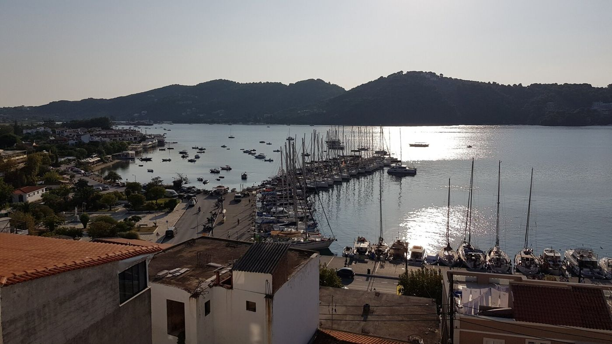
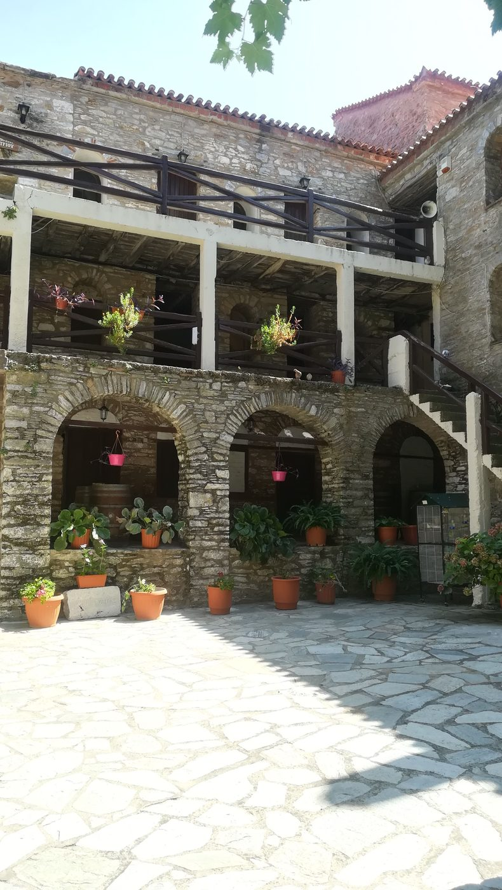
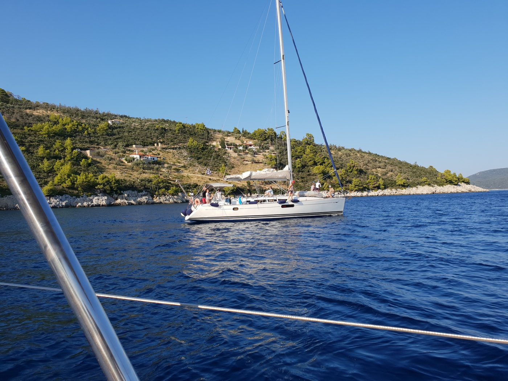
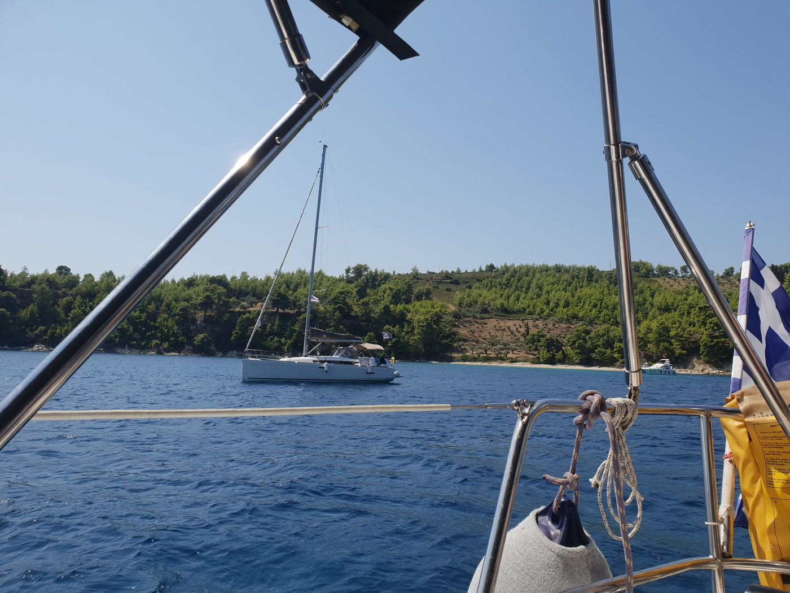
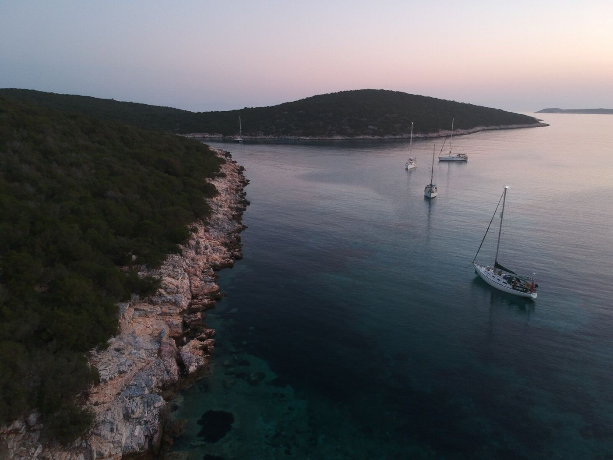
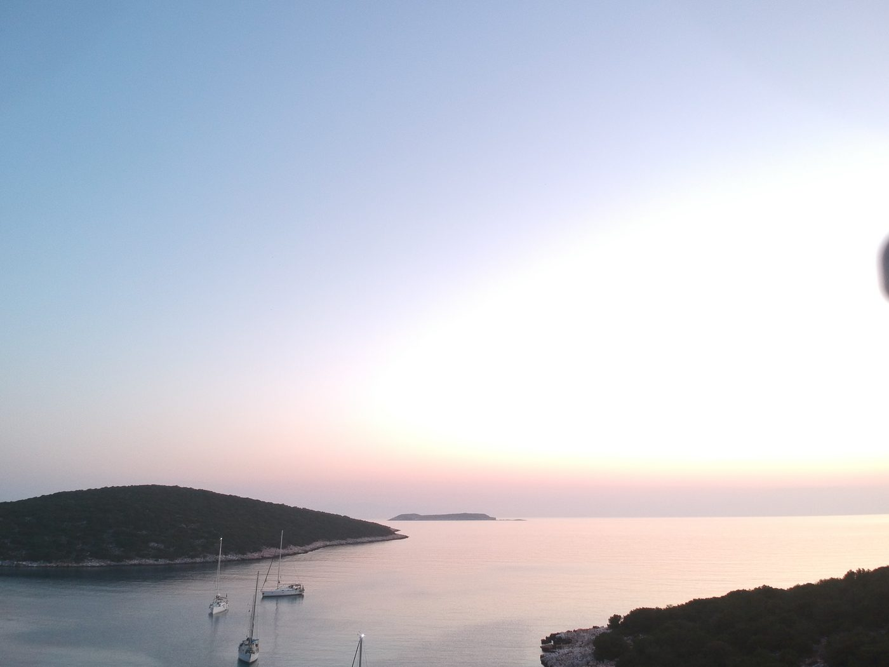
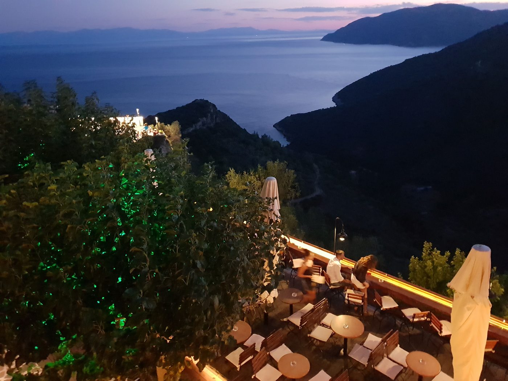
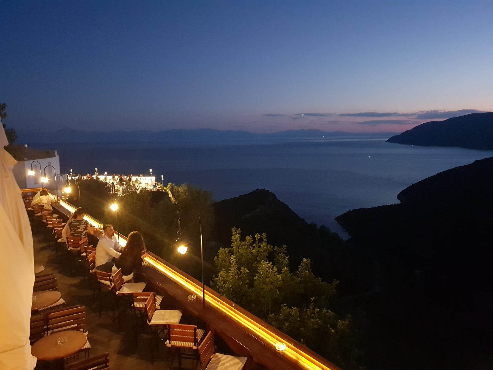
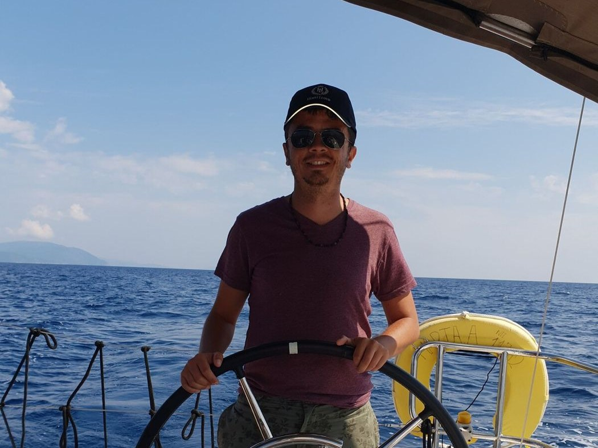
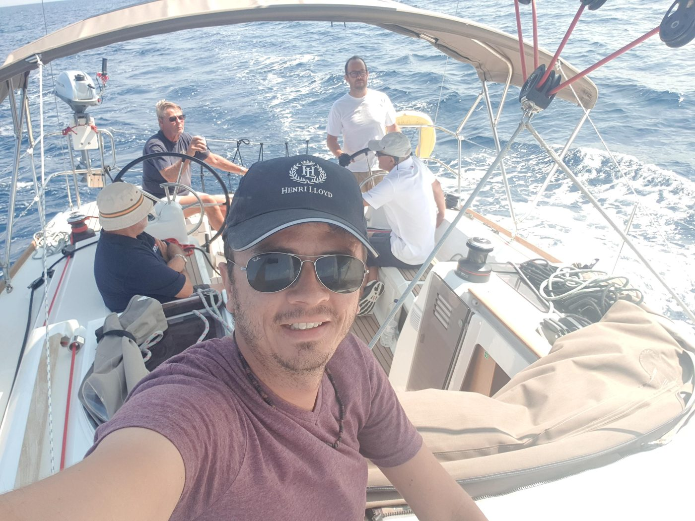

Northern Sporades, 2018Espórades do Norte, 2018Sporades du Nord, 2018
- BaseBaseBase
- Skiathos
- BoatBarcoBateau
- Maria A
- DistanceDistânciaDistance
- about 166 nmcerca de 166 mnenviron 166 milles
The line is the track recorded by Maria A's chart plotter. Hover over or tap a dot for the place and date. Click the map to zoom with the wheel.A linha é o trajeto gravado pelo plotter do Maria A. Passe o mouse ou toque num ponto para ver o lugar e a data. Clique no mapa para usar o zoom com a roda do mouse.La ligne est la trace enregistrée par le traceur de Maria A. Survolez ou touchez un point pour voir le lieu et la date. Cliquez sur la carte pour zoomer avec la molette.
In September 2018 the club sailed the Northern Sporades, the green, pine-covered islands off the east coast of mainland Greece. This was the second cruise I helped organise. I sailed on Maria A, and her chart plotter recorded the week, about 166 nautical miles, drawn on the map above.
Skiathos
The crews met in Skiathos on 1 September. We spent the first day ashore: the harbour and the old town, with its whitewashed lanes and cats asleep in flower baskets, and then the road up into the hills to the monastery of Evangelistria, built around a stone courtyard in the forest.
Em setembro de 2018 o clube velejou pelas Espórades do Norte, as ilhas verdes cobertas de pinheiros na costa leste da Grécia continental. Este foi o segundo cruzeiro que ajudei a organizar. Velejei no Maria A, e o plotter do barco gravou a semana, cerca de 166 milhas náuticas, desenhadas no mapa acima.
Skiathos
As tripulações se encontraram em Skiathos em 1º de setembro. Passamos o primeiro dia em terra: o porto e a cidade velha, com suas vielas caiadas e gatos dormindo em cestos de flores, e depois a estrada morro acima até o mosteiro de Evangelistria, construído em volta de um pátio de pedra no meio da floresta.
En septembre 2018, le club a navigué dans les Sporades du Nord, les îles vertes couvertes de pins au large de la côte est de la Grèce continentale. C'était la deuxième croisière que j'ai aidé à organiser. J'étais à bord de Maria A, dont le traceur a enregistré la semaine, environ 166 milles nautiques, dessinés sur la carte ci-dessus.
Skiathos
Les équipages se sont retrouvés à Skiathos le 1er septembre. Nous avons passé la première journée à terre : le port et la vieille ville, ses ruelles blanchies à la chaux et ses chats endormis dans les paniers de fleurs, puis la route des collines jusqu'au monastère d'Evangelistria, bâti autour d'une cour de pierre en pleine forêt.


Into the marine park
On the 2nd we sailed east along the south coast of Skopelos to Kalamakia, a small fishing harbour on the east side of Alonissos, 36 nautical miles away. Alonissos and the islands beyond it form the National Marine Park of Alonissos and the Northern Sporades, created to protect, among others, the Mediterranean monk seal. From here on there are few villages and many empty coves.
On the 3rd we swam in the morning and then went south-east to Skantzoura, an island with no one living on it, and anchored in a long narrow bay. At dusk a drone went up and photographed the boats from above: the bay, the pine forest down to the water and the other islands of the park on the horizon.
Dentro do parque marinho
No dia 2 velejamos para leste ao longo da costa sul de Skopelos até Kalamakia, um pequeno porto de pescadores no lado leste de Alonissos, a 36 milhas. Alonissos e as ilhas além dela formam o Parque Marinho Nacional de Alonissos e das Espórades do Norte, criado para proteger, entre outros, a foca-monge do Mediterrâneo. Daqui em diante há poucas vilas e muitas enseadas desertas.
No dia 3 nadamos de manhã e depois seguimos para sudeste até Skantzoura, uma ilha onde ninguém mora, e ancoramos numa baía longa e estreita. Ao entardecer um drone subiu e fotografou os barcos de cima: a baía, a floresta de pinheiros descendo até a água e as outras ilhas do parque no horizonte.
Dans le parc marin
Le 2, cap à l'est le long de la côte sud de Skopelos jusqu'à Kalamakia, un petit port de pêche sur la côte est d'Alonissos, à 36 milles. Alonissos et les îles au-delà forment le parc marin national d'Alonissos et des Sporades du Nord, créé notamment pour protéger le phoque moine de Méditerranée. À partir d'ici, peu de villages et beaucoup de criques désertes.
Le 3, baignade le matin, puis route au sud-est vers Skantzoura, une île où personne ne vit, et mouillage dans une longue baie étroite. Au crépuscule, un drone a photographié les bateaux d'en haut : la baie, la forêt de pins jusqu'à l'eau et les autres îles du parc à l'horizon.




Kyra Panagia and Planitis
On the 4th we made the longest run north, the length of the archipelago, to Kyra Panagia, another almost empty island of the park, owned by a monastery. We spent the night in Planitis, a bay on its north coast so nearly closed that from the sea it is hard to see the way in; once inside, it feels like a lake.
On the 5th we sailed round the north of the island and back south to Alonissos, stopping again at Kalamakia before tying up for the night in Patitiri, the island's main harbour. Dinner was in the old village on the hill above. It was largely abandoned after an earthquake in 1965, when most families moved down to Patitiri, and has since been restored; from its terraces you look across the water to Skopelos.
Kyra Panagia e Planitis
No dia 4 fizemos a corrida mais longa para o norte, ao longo de todo o arquipélago, até Kyra Panagia, outra ilha quase deserta do parque, que pertence a um mosteiro. Passamos a noite em Planitis, uma baía na costa norte tão fechada que do mar é difícil ver a entrada; lá dentro, parece um lago.
No dia 5 contornamos o norte da ilha e voltamos para o sul até Alonissos, parando de novo em Kalamakia antes de atracar para a noite em Patitiri, o porto principal da ilha. O jantar foi na vila antiga, no alto do morro. Ela foi quase abandonada depois de um terremoto em 1965, quando a maioria das famílias desceu para Patitiri, e desde então foi restaurada; dos seus terraços se vê Skopelos do outro lado da água.
Kyra Panagia et Planitis
Le 4, la plus longue course vers le nord, sur toute la longueur de l'archipel, jusqu'à Kyra Panagia, une autre île presque déserte du parc, propriété d'un monastère. Nous avons passé la nuit à Planitis, une baie de la côte nord si fermée que depuis la mer on en devine à peine l'entrée ; une fois dedans, on se croirait sur un lac.
Le 5, nous avons contourné le nord de l'île et sommes redescendus vers Alonissos, avec un nouvel arrêt à Kalamakia avant d'amarrer pour la nuit à Patitiri, le port principal de l'île. Dîner dans le vieux village sur la colline. Il a été en grande partie abandonné après un séisme en 1965, quand la plupart des familles sont descendues à Patitiri, puis restauré ; de ses terrasses, on voit Skopelos de l'autre côté de l'eau.


Peristera, and back to Skiathos
The 6th was a lazy day: we left Patitiri, sailed round Peristera, the long island that shelters Alonissos from the east, stopped to swim in its bays and went back to Kalamakia for a second night.
On the 7th we sailed back west along the south coast of Skopelos with a good breeze, the boat heeled and the crew in the cockpit, and I spent much of the day at the helm. That evening we were back in Skiathos.
The legs, from the plotter track
Peristera, e de volta a Skiathos
O dia 6 foi tranquilo: saímos de Patitiri, contornamos Peristera, a ilha comprida que protege Alonissos pelo leste, paramos para nadar nas suas baías e voltamos a Kalamakia para uma segunda noite.
No dia 7 velejamos de volta para oeste ao longo da costa sul de Skopelos com uma boa brisa, o barco adernado e a tripulação no cockpit, e passei boa parte do dia no leme. À noite estávamos de volta a Skiathos.
As pernas, pelo trajeto do plotter
Peristera, et retour à Skiathos
Le 6 a été une journée tranquille : départ de Patitiri, tour de Peristera, l'île allongée qui abrite Alonissos à l'est, baignades dans ses baies et retour à Kalamakia pour une deuxième nuit.
Le 7, retour vers l'ouest le long de la côte sud de Skopelos par une bonne brise, bateau gîté et équipage dans le cockpit, et j'ai passé une bonne partie de la journée à la barre. Le soir, nous étions de retour à Skiathos.
Les étapes, d'après la trace du traceur
| DayDiaJour | LegPernaÉtape | DistanceDistânciaDistance |
|---|---|---|
| 2 | Skiathos → Kalamakia | 35.9 nm |
| 3 | Kalamakia → Skantzoura | 14.2 nm |
| 4 | Skantzoura → Kyra Panagia → Planitis | 33.6 nm |
| 5 | Planitis → Kalamakia → Patitiri | 26.9 nm |
| 6 | Patitiri → Peristera → Kalamakia | 21.7 nm |
| 7 | Kalamakia → Skiathos | 33.7 nm |
| TotalTotalTotal | 166 nm |

